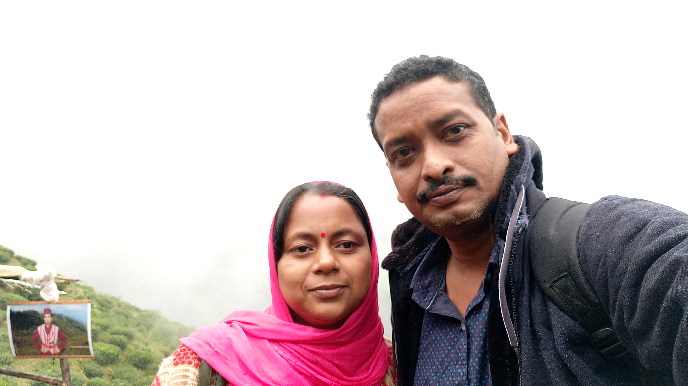

"The greatest gift of life is friendship, and I have received it." You meet many along the way of life but only some stay with you forever. Those are your real friends who stay by your side through thick and thin. Friendship is the most beautiful gift you can present to anyone. It is one which stays with a person forever.Moreover, friendship makes us stronger. It tests us and helps us grow. For instance, we see how we fight with our friends yet come back together after setting aside our differences. This is what makes us strong and teaches us patience.My friends are also very special. I met them when I am class-3. The most beautiful that I spent with my friends is going to a Interschool Scout and Guide competition. My best friends are Sai Srishti, Subhalaxmi Panda and Srusti Ananya. They are very special for me. We had spent much of our time together. Srusti is a little studious. Sai Srishti is very cute. And Subhalaxmi is a little innocent. We have also gone to to many comepetitions together. That is the best time I have ever in my life. Thank you god for giving me such gems.
I love reading books. I have lots of books in my home. But I love four books the most they are:
75 amazing grandparents stories
Life stories of great scientists of India
Ruskin Bond's famous stories
Sherlock Homes
.jpg)
My name is Suryasnata Sahoo. I was born on 1st December 2009. I am from Jagatsinghpur, Odisha. I read in class-7. My father's name is Jeevan Kumar Sahoo. My mother's name is Baijayanti Sahoo. I love spending time with my friends and family. I have a little sister. Her name is Prachi Parinita Sahoo. I love reading books.
My inpiration is my father and mother. They are vey hardworking. They manages everything in our home. They also take care of both of us. I love them very much. They also forgive my mistakes. I want to thank the god for giving me such parents.
